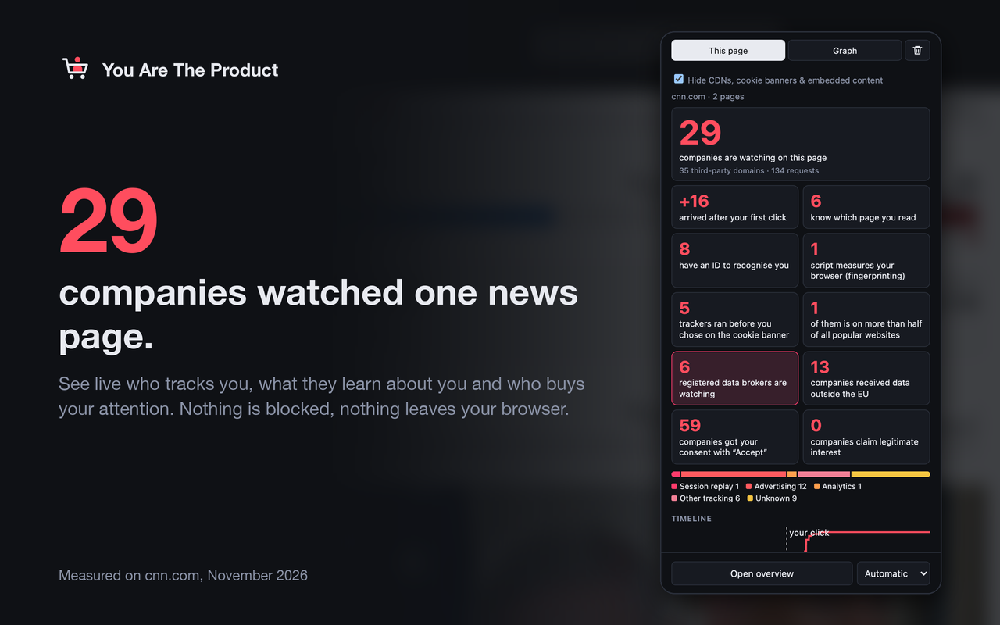
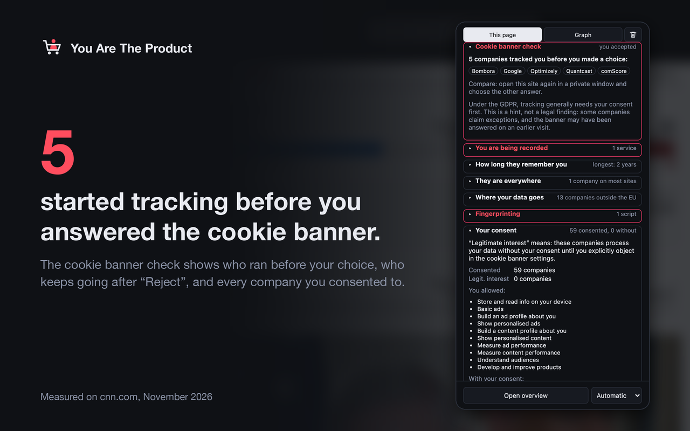
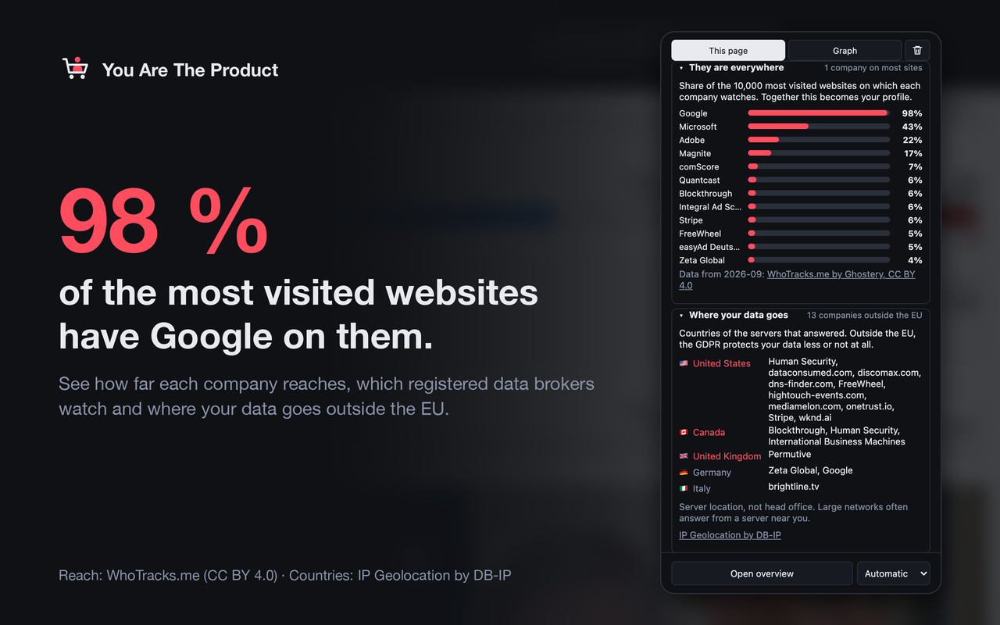
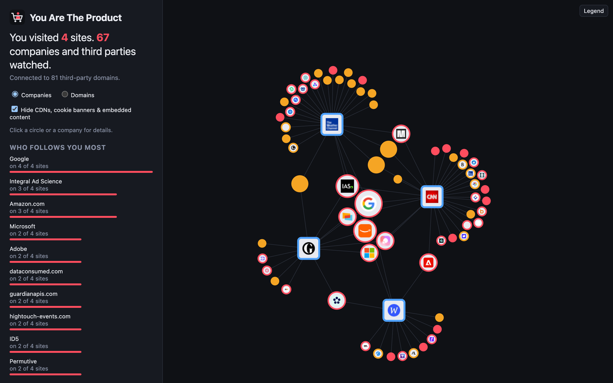
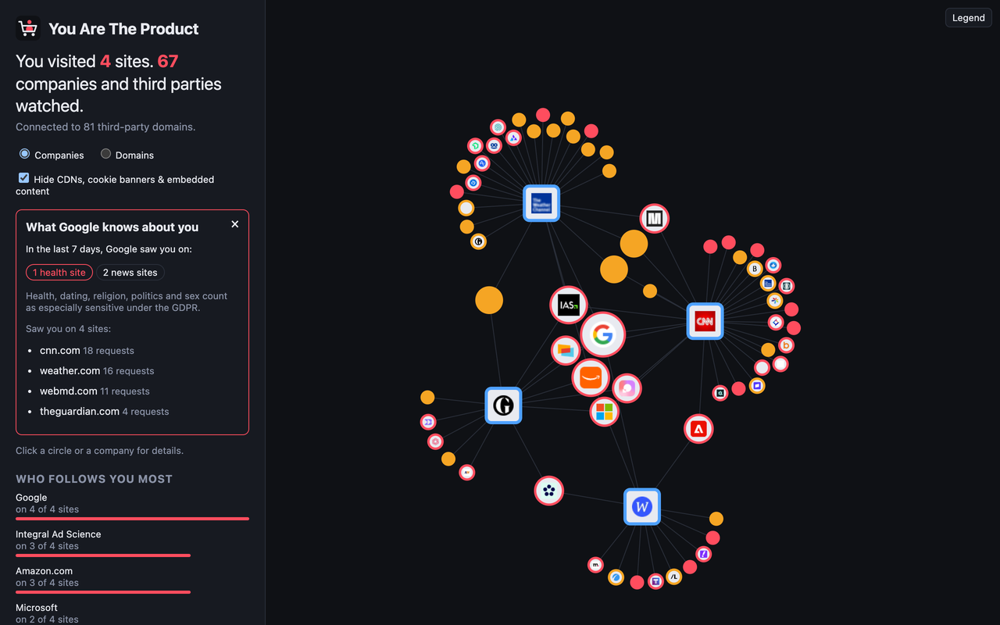

Wenn du nicht bezahlst,
bist du das Produkt.
Eine kostenlose Browser-Extension, die live zeigt, wer dir beim Surfen zusieht, was diese Firmen erfahren und wer deine Aufmerksamkeit kauft. Sie blockiert nichts. Sie macht nur sichtbar, was sonst unsichtbar bleibt.
Kostenlos und Open Source. Kein Konto, kein Server: Alle Daten bleiben in deinem Browser.

Warum das wichtig ist
Dein Besuch wird jeden Tag oft verkauft
Das meiste im Netz ist kostenlos, weil deine Aufmerksamkeit verkauft wird. Meist nicht dein Name, sondern ein Profil: welche Seiten du liest, was du dir ansiehst, wann du online bist. Jede Firma, die zusieht, fügt ein Stück hinzu.
am Tag werden die Daten eines durchschnittlichen Menschen in Europa in Werbeauktionen verschickt. In den USA 747-mal.
ICCL, 2022Datensegmente führte ein einzelner Datenhändler zu fast jedem Menschen in den USA, etwa „werdende Eltern“ oder „Interesse an Diabetes“.
FTC-Bericht, 2014der 50.000 meistbesuchten Websites zeichneten Mausbewegungen, Klicks und Tippen mit Session-Replay-Skripten auf.
Princeton CITP, 2017Was du siehst
Aufs Symbol klicken. Sehen, wer da ist.
Das Popup zeigt die aktuelle Seite, das Seitenpanel behält sie im Blick, und die Übersicht zeigt alles auf einmal.




- Wer was bekommt: die Seite, die du liest, IDs zum Wiedererkennen, dieselbe ID an mehrere Firmen
- „Sold.“ Werbeauktionen auf der Seite und jeder Bieter, der deinen Besuch bekam
- Deine Einwilligung im Klartext: wie vielen Firmen du zugestimmt hast
- Werbe-Pixel entschlüsselt: Produkte, Preise, Suchbegriffe, gehashte E-Mail
- E-Mail-Lecks aus Formularen, noch bevor du auf Absenden klickst
- Mitschnitt: deine eigenen Mausbewegungen so, wie der Dienst sie sieht
- Fingerprinting und als Teil der Seite getarnte Tracker
- Datenhändler unter den Firmen, die zusehen
- 14 Sprachen
Für Lehrkräfte
Eine 10-Minuten-Übung
- Schätzen: Wie viele Firmen sehen zu, wenn ihr eine Nachrichtenseite öffnet?
- Akzeptieren: privates Fenster, große Nachrichtenseite, „Alle akzeptieren“. Zählen.
- Ablehnen: neues privates Fenster, dieselbe Seite, „Ablehnen“. Noch mal zählen.
- Reden: Warum ist „Akzeptieren“ leichter zu finden? Wer bezahlt die Seite?
Die ganze Anleitung steht in der Beschreibung auf GitHub.
Deine Privatsphäre
Wer Tracker zeigt, darf selbst keiner sein
- Alles bleibt in deinem Browser. Kein Server, kein Konto, keine Statistik.
- Sie blockiert nichts. Sie zeigt, was sonst passiert. Zum Schutz nimm einen Blocker wie uBlock Origin und sieh zu, wie die Zahl sinkt.
- Open Source unter der GPL, damit alle nachprüfen können.